ヘッドウォータースのフィード
https://zenn.dev/p/headwaters
株式会社ヘッドウォータースのテックブログです。 AIエージェント、生成AI、Azure、GitHub Copilot、IoT、XR系などData&AIとApp modernizeに関して幅広く投稿します！
フィード
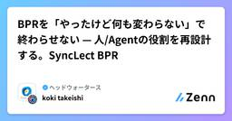
BPRを「やったけど何も変わらない」で終わらせない — 人/Agentの役割を再設計する。SyncLect BPR
ヘッドウォータースのフィード
はじめに「BPRをやった。けれど、何も変わらなかった」 — これが、本ハッカソンで私たちが正面から取り組んだ問いです。AIエージェント導入の相談は急増しています。設計レビュー、業務改革プロジェクト、Agentic Workflow の導入検討 — それぞれの会議で「どの業務をAIに任せるか」「人はどこに集中するか」「ROIは妥当か」といった議論が交わされます。ですが、現実には 「導入したが、現場の働き方は変わらなかった」「結局元のやり方に戻った」 という感覚で終わるプロジェクトが圧倒的に多い。（Agentを使ったBPRの成功率は10~30%程度 ※1）失敗の理由は業務への埋め...
2時間前

Agent Garden - Teams会議の暗黙知を“育てて咲かせる” Microsoft 365 Copilot エージェント生成ツール
ヘッドウォータースのフィード
はじめに「ベテランの暗黙知を、いかに継続的にエージェントへ学習させ続けられるか」 — これが本ハッカソンで私たちが取り組んだ問いです。設計レビュー、技術勉強会、デイリー - 私たちが日々参加するTeams会議では、「なぜこの設計を選んだか」「この技術を標準化するには？」「ユーザー目線のUIか」など様々なナレッジ・スキル・パーソナリティに基づいた創造的会話や判断が行われています。ですが、現実には議事録とネクストアクションだけが残り、判断の根拠や暗黙知は流れて消えています。本当に使えるカスタムエージェントとは変化する状況や判断、スキルやナレッジの更新を取り込み、チームで継続的に育...
1日前

早朝のAIは空いている—生活をIoT改造した話 1
1
ヘッドウォータースのフィード
はじめにMicrosoft 365 Copilot の Cowork（フロンティア）をご存知でしょうか。複雑なタスクを Copilot に依頼し、バックグラウンドで長時間の推論を走らせることができる機能です。非常に便利な機能なのですが、2026年5月現在、まだフロンティア版ということもあり、利用者が集中する時間帯には推論が途中で止まったり、極端に遅くなることがあります。そこで私がたどり着いた結論は単純でした。「みんなが使わない時間に使えばいい」つまり、早起きです。 早起きできない問題とはいえ「明日から5時に起きよう」と決意するだけで起きられるなら誰も苦労しません。...
1日前
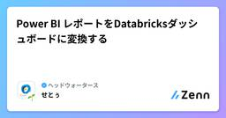
Power BI レポートをDatabricksダッシュボードに変換する
ヘッドウォータースのフィード
Azure DatabricksのGenie Codeに搭載されたBeta機能「Import BI files using Genie Code」を検証しました。https://learn.microsoft.com/ja-jp/azure/databricks/dashboards/manage/import-bi TL;DR観点内容できること.pbitファイルをGenie Codeに渡すと、Databricks上にスキーマ、テーブル、Metric View、ダッシュボードが自動生成される意味Power BIに閉じていたBI資産(モデル、メジャー、レ...
2日前
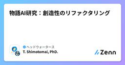
物語AI研究：創造性のリファクタリング
ヘッドウォータースのフィード
はじめに「AIに書かせたら話が崩壊した」「紙芝居的に画像生成で作ったキャラクターが次のコマに出てこない」――AIで物語をつくってみたことのある人なら一度は感じたことがあるのではないでしょうか。2026年5月現在では AI物語生成（Story Generation） は まだ 難しいです。単なるテキスト生成や画像生成を超えて、登場人物・世界観・因果関係・時系列が長距離にわたって整合するコンテンツを自動生成する問題です。この問題が難しいのは、局所的な流暢さだけでなく グローバルな一貫性（consistency）とコヒーレンス（coherence） が同時に求められるからです。逆に...
3日前
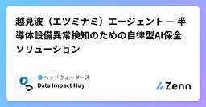
越見波（エツミナミ）エージェント ― 半導体設備異常検知のための自律型AI保全ソリューション
ヘッドウォータースのフィード
はじめに東京エレクトロンデバイス様主催の Microsoft Agent Hackathon に、Data Impact の Delivery Team として参加させていただきました。(https://zenn.dev/hackathons/microsoft-agent-hackathon-2026)本記事では、私たちが提案したソリューション 「越見波（エツミナミ）エージェント」 について、課題背景からアーキテクチャ、AIモデルの設計、エージェント層の実装まで、技術的な観点で詳しくご紹介します。 チーム紹介 会社についてData Impact Joint Sto...
3日前
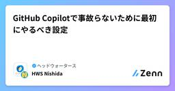
GitHub Copilotで事故らないために最初にやるべき設定 2
ヘッドウォータースのフィード
はじめにGitHub Copilot を使っていると、次のようなことが気になる場面があります。危険なコマンドを提案してほしくない機密情報を扱う際に安全な実装をしてほしいセキュリティを意識した提案に寄せたいこうした課題に対して、本記事では、設定ファイル（copilot-instructions.md）を用いて Copilot の出力を制御する方法を整理します。 設定ファイルを作成するcopilot-instructions.md はプロジェクトルート直下の .github フォルダに配置します。project-root/└─ .github/ └─ co...
4日前
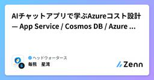
AIチャットアプリで学ぶAzureコスト設計 — App Service / Cosmos DB / Azure OpenAI / 外部AI
ヘッドウォータースのフィード
この記事について「PoCで動かしたAIチャットアプリを本番に載せたら、月額がPoCの10倍になって上長への説明に困った」。そういう経験、もしくはそれを予防したくて料金表を見始めた段階、どちらの立場でもこの記事の対象です。Azureの料金ページは網羅的ですが、「自分のワークロードに対してどう設計判断するか」は料金表だけ見ても分からない。そして、AIチャットアプリは特にこれが難しい。なぜなら、同じアプリの中に固定費的に課金されるサービス(App Service Plan)使用量(トークン)で課金されるサービス(Azure OpenAI、外部AI)スキーマ設計次第で課金が...
4日前
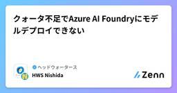
クォータ不足でAzure AI Foundryにモデルデプロイできない
ヘッドウォータースのフィード
何が起きていたかAzure AI Foundryでモデルをデプロイしようとしたとき、画面が「リソースとクォータを確認しています…」のまま進まず、実質的にデプロイできない状態になりました。原因は、クォータ不足(未割り当て)でした。 クォータとはクォータとは、「モデルをどれだけ利用できるか」を示す上限枠のことです。ただし注意点として、このクォータは「サブスクリプション × リージョン」の単位で管理されます。そのため、同じサブスクリプションであっても、リージョンが異なれば別々のクォータとして扱われます。 解決手順 クォータ割り当てを確認するAzure AI Foun...
5日前
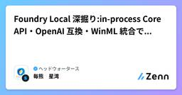
Foundry Local 深掘り:in-process Core API・OpenAI 互換・WinML 統合で読み解く Windows
ヘッドウォータースのフィード
この記事についてMicrosoft の Foundry Local は、ローカル LLM を OpenAI 互換 API で動かせる新顔のランタイムです。winget install Microsoft.FoundryLocal 1行で入り、foundry model run phi-4-mini でチャットできる手軽さから「Ollama の Microsoft 版」と紹介されることもあります。ところが少し中を覗くと、Ollama とは抽象化のレイヤがかなり違う、別物のソフトウェアであることに気付きます。Foundry Local は CLI の裏に常駐するサービスでもあり、SD...
5日前
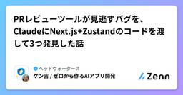
PRレビューツールが見逃すバグを、ClaudeにNext.js+Zustandのコードを渡して3つ発見した話
ヘッドウォータースのフィード
はじめにnpm run testも通った。ESLintも問題なし。TypeScriptの型チェックも通過。でも、実際に画面を操作したら壊れる——そういうバグが存在します。AIコードレビューの世界では「AIにテストコードを書かせると、バグを含んだ実装コードをそのまま正解としてテストを生成してしまう」という問題がよく指摘されています。コードを見せてテストを生成させると、バグを含んだコードを「正」としてテストが書かれてしまうのです（同語反復の罠）。でも今回やったのは、テストを書かせることではありません。機能単位でコードをClaudeに渡し、潜在バグを探させることでした。特別なプロン...
6日前
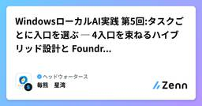
WindowsローカルAI実践 第5回:タスクごとに入口を選ぶ ─ 4入口を束ねるハイブリッド設計と Foundry Local/Azure
ヘッドウォータースのフィード
この記事について連載「WindowsローカルAI実践入門」の**第5回(最終回)**です。第1回で7語の技術地図を組み立て、第2回で ONNX Runtime の幹を通常 ML で歩き、第3回で SLM を載せ、第4回で Windows ML に EP 自前管理を渡し、Phi Silica の最小コードまで届きました。ここまでで「4つの入口」(Windows AI APIs / Foundry Local / Windows ML / ORT 直)は単体としては揃いました。ところが、実アプリに統合する段になると、入口を1つに固定できない問いが残ります。 同じアプリに OCR・要約...
6日前
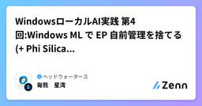
WindowsローカルAI実践 第4回:Windows ML で EP 自前管理を捨てる(+ Phi Silica という既製の入口)
ヘッドウォータースのフィード
この記事について連載「WindowsローカルAI実践入門」の第4回です。第1回は7語を1枚の技術地図に置き、第2回はその地図の §2(ONNX→ORT→EP)を scikit-learn/PyTorch の通常 ML で歩き、第3回は同じ幹に 生成ループ・量子化・メモリを足して SLM を動かしました。第2回・第3回では、EP のパッケージを開発者が自分で選び、--pre を付け、混在を避け、配布と更新も抱える運用が前提でした(pip install onnxruntime-directml、pip install --pre onnxruntime-genai-directml...
8日前

WindowsローカルAI実践 第3回:ONNX Runtime GenAI で SLM をローカル実行する(量子化とメモリの壁)
ヘッドウォータースのフィード
この記事について連載「WindowsローカルAI実践入門」の第3回です。第1回は本連載の全体像を1枚の技術地図として示し、第2回はその中の ONNX → ONNX Runtime(ORT)→ Execution Provider(EP) と CPU/GPU の使い分け を、scikit-learn と PyTorch の "ふつうの ML モデル" で実際に動かしました。そこで通した幹は 変換 → ロード → 前処理 → 推論 → 検証 の5段でした。ONNX Runtime は推論を速くしますが、量子化やモデル最適化は別工程です。本記事はその「別工程」を、題材を SLM(小規模...
9日前
Microsoft Fabricのデモ・チュートリアル集「Jumpstart」がすごい
ヘッドウォータースのフィード
Fabric Jumpstart とは2026年5月19日、Microsoft から Fabric Jumpstart が公開されました。一言でいうと、Microsoft Fabric のデモ・チュートリアルを、ワークスペースに数分でデプロイできるカタログ集です。これがすごいなーとてもいいなー、と思いました。「Fabricって結局何ができるの？」という基本的な問いに対して、ドキュメントベースではなく手触り感のあるコンテンツとして伝えられるようになると思います。ぜひみなさんも使ってみてください。コンテンツいっぱいあるhttps://jumpstart.fabric.mi...
9日前
Azure ガードレールの先 — PyRIT・Red Teaming Agent・Risk & Safety Evaluators・Defe
ヘッドウォータースのフィード
この記事について前回 Azure中心で設計するLLMガードレール実践:入力・出力をどこで判定し、どこで止めるか では、Azure AI Content Safety / Azure OpenAI / Foundry / APIM llm-content-safety の runtime ガードレール設計 — つまり本番リクエストが流れている最中にテキストレベルで止める / 検出する層 — を整理しました。ただ、運用に入ると次の問いがすぐ来ます。Prompt Shields を入れたが、本当に効いているか試したことがあるか?本番稼働後の jailbreak / 認証情報漏え...
10日前
やる気のリバースエンジニアリング
ヘッドウォータースのフィード
このタイトルを最初は「やる気ハッキング」としていましたがやめました。この記事はやる気を出すためのコツのように見えてしまいますが、そうではありません。やる気があると仕事は進む。それは当然です。しかし、ここで目指すのはやる気を出すことではなく、やる気が無くても仕事を進めるコツです。つまり、やる気が出ないので仕事は進まないという状態をハッキングします。やる気の代わりになるものを作るという発想なのでリバースエンジニアリングです。とはいえ、大層なものではなく、エンジニアとして働く中で学んだ教訓について書いていきます。同じような悩みを持つエンジニアの方にもしかすると役に立つかもしれない...
10日前
WindowsローカルAI実践 第2回:ONNX Runtime で“ふつうのMLモデル”を動かす最小実装
ヘッドウォータースのフィード
この記事について連載「WindowsローカルAI実践入門」の第2回です。第1回「WindowsローカルAIの技術地図 2026」では、ONNX / ONNX Runtime / Execution Provider / DirectML / Windows ML / NPU / Copilot+ PC という7語を、層の違う概念として1枚の技術地図に整理しました。第1回は概念の整理に絞っています。第2回は、その土台 —— ONNX(形式)→ ONNX Runtime(推論エンジン)→ Execution Provider(実行経路)→ CPU / GPU(ハードウェア) —— を...
11日前
Microsoft 365 Copilot Cowork - Taskの自動化を作成する方法
ヘッドウォータースのフィード
執筆日2026/5/20 ふと思ったCopilotを開くと表示される「スケジュール済み」タブ。これってどう使うのか？タスクの自動化ができるのか？どうやって作成するのか？調べてもあまり情報が出てこない…。そもそも自分で作れるのか疑問でした。 結論作れる（タスクの自動化が可能） どのように作成するのか？Copilotに対して、自動化したいタスクを依頼するタスク実行に必要なコンテキストが自動生成されるアクティブ化して実行をクリック実施されたことを確認スケジュール済みのタブにタスクが追加されていることを確認
12日前
WindowsローカルAIの技術地図 2026:ONNX Runtime・Windows ML・DirectML・NPUの関係を整理する
ヘッドウォータースのフィード
この記事について「WindowsでローカルAIを動かしたい」と思って調べ始めると、ONNX / ONNX Runtime / DirectML / Windows ML / Execution Provider / NPU / Copilot+ PC という言葉が一斉に出てきます。さらに厄介なことに、ある記事は「DirectMLを使え」と言い、別の記事は「Windows MLを使え」と言い、しかも「Windows ML」と名のつくものが2つ存在します。この記事は、これらを1枚の技術地図に置き直すことを目的にします。コードは出てきません。代わりに、「どの言葉がどの層の話なのか」「2...
12日前